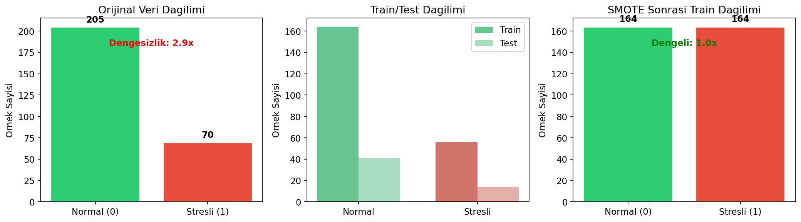
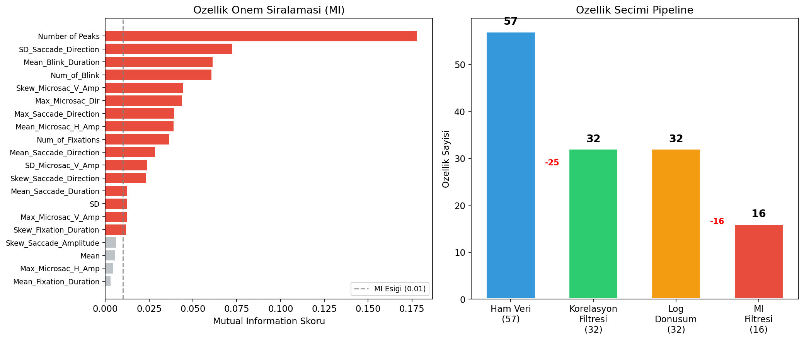
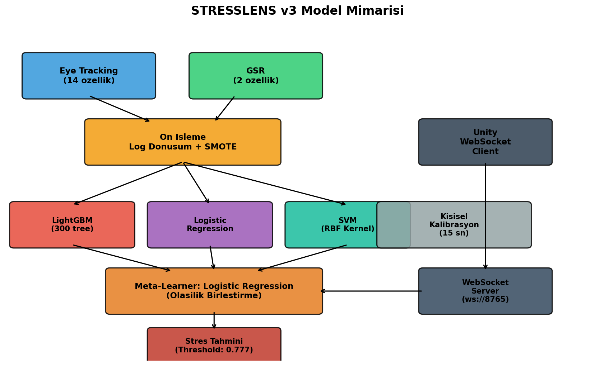
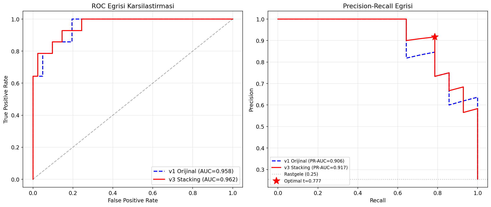
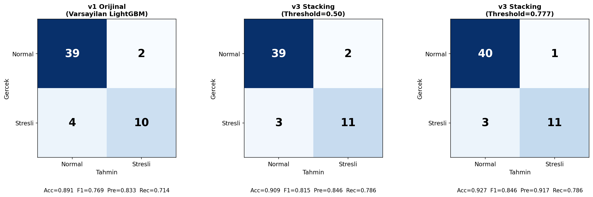
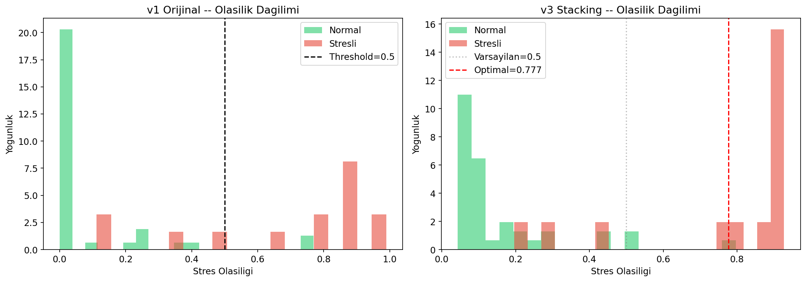
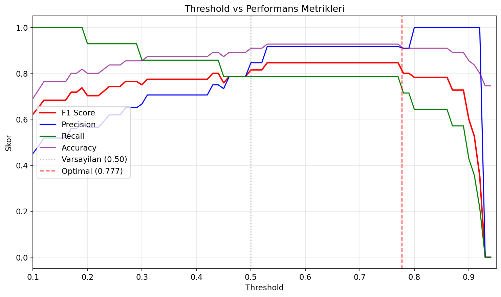
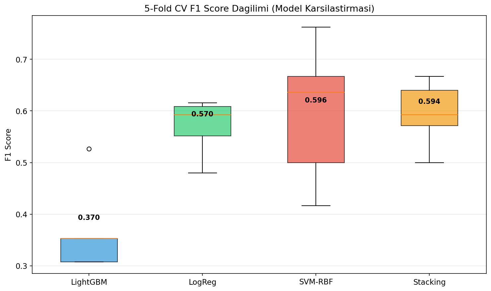

STRESSLENS, VR ortaminda goz izleme (Eye Tracking) ve deri iletkenlik tepkisi (GSR) sensorlerinden toplanan verilerle gercek zamanli stres tespiti yapan bir sistemdir. Bu rapor, v1 (varsayilan LightGBM) modelinden v3 (Stacking Ensemble) modeline gecis surecindeki iyilestirmeleri, performans kazanimlarini ve mimari kararlari detayli olarak sunmaktadir.
| Parametre | Deger |
|---|---|
| Kaynak | VREED Dataset (360-VE videolari) |
| Toplam Ornek | 275 (37 NaN satirdan sonra) |
| Normal (0) | 205 (%74.5) |
| Stresli (1) | 70 (%25.5) |
| Dengesizlik Orani | 2.93x |
| Ham Ozellik | 57 (50 Eye + 8 GSR - 1 etiket) |
| Train / Test | 220 / 55 (%80/%20, stratified) |
| Etiketleme | Quad_Cat == 3 → stres=1 |
Veri setinde normal ornekler stresli orneklerin ~3 kati. Bu dengesizlik ele alinmadigi takdirde model "hep normal de" stratejisine kayar ve %74.5 accuracy alir.
Cozum: SMOTE (Synthetic Minority Over-sampling Technique) ile azinlik sinifi 56'dan 164'e cikarilarak tam denge saglanmistir.

Esik degeri 0.8 ile yuksek korelasyonlu ozellikler sadece train seti uzerinde hesaplanarak elenmistir. Bu, data leakage (bilgi sizintisi) sorununu onler — test verisi hicbir sekilde ozellik secim surecini etkilemez.
25 ozellik elendi: SD/Max_Fixation_Duration, Num_of_Saccade, tum Saccade Length/Amplitude varyantlari, SD/Max_Blink_Duration, cesitli Microsaccade turevleri, GSR Variance/Min/Max/Valleys/Ratio.
|Skewness| > 2 olan ozellikler sign(x) * log(1 + |x|) donusumu ile normallestirilmistir.
Bu, agac modellerinin split kalitesini artirarak daha iyi karar sinirlari olusturmasini saglar.
Donusturulen ozellikler: Mean_Fixation_Duration First_Fixation_Duration Max_Saccade_Direction Num_of_Blink Mean_Blink_Duration SD_Microsac_Peak_Vel Skew_Microsac_Peak_Vel Max_Microsac_Dir SD
websocket_server.py donusumu model_meta.json dosyasindaki listeye gore otomatik uygular.
MI skoru 0.01'in altinda kalan 16 ozellik elenmistir. Bu ozellikler stres/normal ayriminda neredeyse sifir bilgi tasimaktadir.

Uc farkli algoritmanin guclu yanlarini birlestiren iki katmanli bir ensemble yapisi kullanilmistir:
| Katman | Model | Rol | Onemli Parametreler |
|---|---|---|---|
| Base Modeller |
LightGBM | Non-lineer oruntuler, ozellik etkilesimleri | n_est=300, lr=0.01, depth=4, leaves=15, subsample=0.7 |
| Logistic Regression | Lineer sinir, olasilik kalibrasyonu | C=1.0, class_weight=balanced, StandardScaler | |
| SVM (RBF) | Karar siniri cesitliligi, kernel trick | C=1.0, kernel=rbf, class_weight=balanced | |
| Meta | Logistic Regression | 3 modelin olasilik ciktilarini birlestirir | class_weight=balanced, 5-fold CV stacking |

| Metrik | v1 Orijinal (LightGBM, 32 ozellik) |
v3 Stacking (t=0.50) |
v3 Stacking (t=0.777) |
Degisim (v1 → v3 optimal) |
|---|---|---|---|---|
| Accuracy | 0.891 | 0.909 | 0.927 | +4.0% |
| F1 Score | 0.769 | 0.815 | 0.846 | +10.0% |
| Precision | 0.833 | 0.846 | 0.917 | +10.1% |
| Recall | 0.714 | 0.786 | 0.786 | +10.1% |
| ROC-AUC | 0.958 | 0.962 | +0.4% | |
| PR-AUC | 0.906 | 0.917 | +1.2% | |
| Log Loss | 0.239 | 0.244 | +2.1% | |
| Ozellik Sayisi | 32 | 16 | -50% | |
| False Positive | 2 | 2 | 1 | -50% |
| False Negative | 4 | 3 | 3 | -25% |



| Metrik | Train | Test | Fark | Degerlendirme |
|---|---|---|---|---|
| Accuracy | 0.960 | 0.927 | 0.033 | Dusuk fark — iyi genelleme |
| F1 Score | 0.960 | 0.846 | 0.114 | Kabul edilebilir (kucuk veri seti etkisi) |
Varsayilan 0.50 threshold yerine, Precision-Recall egrisinden F1 Score'u maksimize eden optimal threshold hesaplanmistir: 0.777
| Threshold | F1 | Precision | Recall |
|---|---|---|---|
| 0.30 | 0.750 | 0.667 | 0.857 |
| 0.40 | 0.774 | 0.706 | 0.857 |
| 0.50 | 0.815 | 0.846 | 0.786 |
| 0.55 | 0.846 | 0.917 | 0.786 |
| 0.777 | 0.846 | 0.917 | 0.786 |
| 0.60 | 0.846 | 0.917 | 0.786 |
Stres tespiti uygulamasinda iki tur hata var:
0.777 threshold'u sadece 1 yanlis alarm uretirken 14 stresli kisiden 11'ini dogru tespit eder. Kalibrasyon sistemi kisiye ozel threshold ayari yaparak bu dengeyi daha da iyilestirir.

5-Fold Stratified Cross-Validation ile modellerin gercek performansi olculmustur. CV sonuclari, test seti sonuclarindan daha pesimist ama daha guvenilirdir (55 orneklik test setinde tek bir ornekteki degisiklik metrikleri %2 oynatabiliyor).

| Model | CV F1 (Ortalama) | CV F1 (Std) | Tutarlilik |
|---|---|---|---|
| LightGBM (tek basina) | 0.370 | 0.081 | Dusuk |
| Logistic Regression | 0.570 | 0.050 | Yuksek |
| SVM-RBF | 0.596 | 0.123 | Orta |
| Stacking Ensemble | 0.594 | 0.058 | Yuksek |
| # | Ozellik Adi | Kaynak | MI Skoru | Log Donusum | Aciklama |
|---|---|---|---|---|---|
| 1 | Number of Peaks | GSR | 0.178 | - | GSR sinyalindeki stres tepe sayisi (normalize) |
| 2 | SD_Saccade_Direction | Eye | 0.073 | - | Sakkad yon degiskenliginin standart sapmasi |
| 3 | Mean_Blink_Duration | Eye | 0.061 | Evet | Ortalama goz kirpma suresi (ms) |
| 4 | Num_of_Blink | Eye | 0.061 | Evet | Goz kirpma orani (sayi/pencere) |
| 5 | Skew_Microsac_V_Amp | Eye | 0.044 | - | Mikrosakkad dikey genlik carpikligi |
| 6 | Max_Microsac_Dir | Eye | 0.039 | Evet | Mikrosakkad maksimum yonu (derece) |
| 7 | Max_Saccade_Direction | Eye | 0.037 | Evet | Sakkad maksimum yonu (radyan) |
| 8 | Mean_Microsac_H_Amp | Eye | 0.033 | - | Mikrosakkad yatay genlik ortalamasi |
| 9 | Num_of_Fixations | Eye | 0.031 | - | Fiksasyon orani (sayi/pencere) |
| 10 | Mean_Saccade_Direction | Eye | 0.027 | - | Ortalama sakkad yonu (radyan) |
| 11 | SD_Microsac_V_Amp | Eye | 0.025 | - | Mikrosakkad dikey genlik standart sapmasi |
| 12 | Skew_Saccade_Direction | Eye | 0.023 | - | Sakkad yon carpikligi |
| 13 | Mean_Saccade_Duration | Eye | 0.019 | - | Ortalama sakkad suresi (ms) |
| 14 | SD | GSR | 0.016 | Evet | GSR sinyali standart sapmasi |
| 15 | Max_Microsac_V_Amp | Eye | 0.012 | - | Mikrosakkad dikey genlik maksimumu |
| 16 | Skew_Fixation_Duration | Eye | 0.011 | - | Fiksasyon suresi carpikligi |
Number of Peaks (MI=0.178).
Eye tracking ozelliklerinin her biri tek basina dusuk MI tasirken, 14 tanesi birlikte guclu bir sinyal olusturmaktadir.
| Parametre | Deger | Aciklama |
|---|---|---|
| Kalibrasyon Suresi | 15 saniye | Baglanti basinda sakin hal olcumu |
| Baseline | Otomatik | Sakin haldeki ortalama stres olasiligi |
| Offset | +0.15 | Baseline uzerine eklenen hassasiyet tamponu |
| Min / Max Threshold | 0.25 / 0.60 | Kisisel threshold sinirlari |
| Varsayilan Threshold | 0.777 | Kalibrasyon tamamlanmadan kullanilir (model_meta.json'dan) |
websocket_server.py su islemleri otomatik yapar (Unity'nin bunlardan haberi olmasi gerekmez):
model_meta.json listesinden)